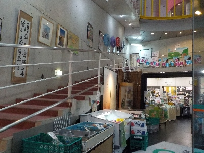
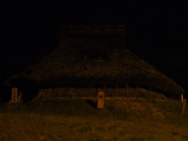
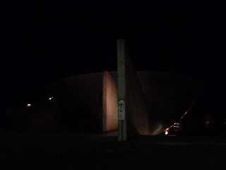

姫神の湯 玉造温泉ゆうゆ
2024/06/22

売店が広いです。道の駅みたいで、お土産や野菜果物なんかが販売されてました。
温泉はドライサウナが人気で、ミストサウナは空いてました。
ドライの方が好きな人が多いんですね。
雨が降っているせいか露天風呂は水温が低めでした。ちょっとのぼせた状態で、雨にあたりながら温泉に浸かるのがとても気持ち良かったです。
雨の日の温泉はいいな。
島根県松江市玉湯町玉造255番地
2024/06/22

売店が広いです。道の駅みたいで、お土産や野菜果物なんかが販売されてました。
温泉はドライサウナが人気で、ミストサウナは空いてました。
ドライの方が好きな人が多いんですね。
雨が降っているせいか露天風呂は水温が低めでした。ちょっとのぼせた状態で、雨にあたりながら温泉に浸かるのがとても気持ち良かったです。
雨の日の温泉はいいな。
2013/09/22
玉造温泉のゆーゆに行きました。
ゆーゆは大人気で、温泉の前は駐車場待ちの車が行列を作っていました。
仕方ないので隣の公園の駐車場に車を止めて、歩いて行きました。

ちょっと暗いし舗装された道じゃないので歩きにくいですが、温泉の近道って書いた看板が何個も置いてあるので迷わないです。

公園から入ると入口はこんな感じです。
ゆーゆは５階建てのビルなんですが、裏が山なのでこの入口は５階になります。
温泉ですが、さらさらとしたお湯で、無色で、薬の臭いがありました。 これって温泉？
まわりの旅館の温泉は料金が高いですが、ここは大人400円ととてもリーズナブル。
安いので仕方ないって思った方がいいのかなー。
近くの足湯はもっと気持ちいいのに。
観光客の人が、玉造温泉はこんなんだって思わないといいんですけど。